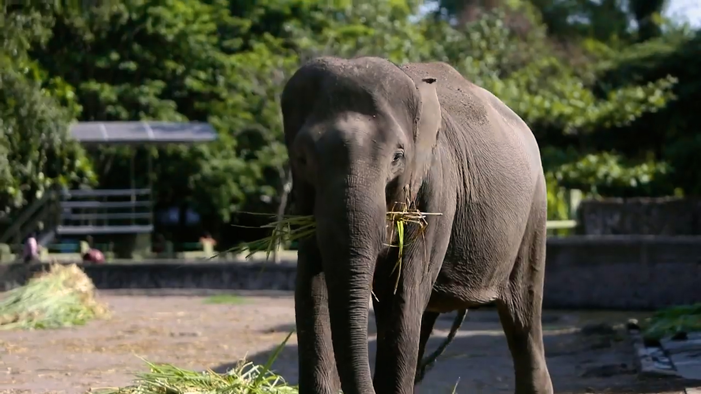
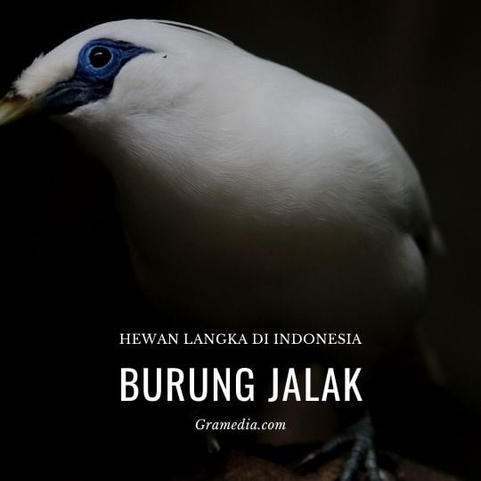
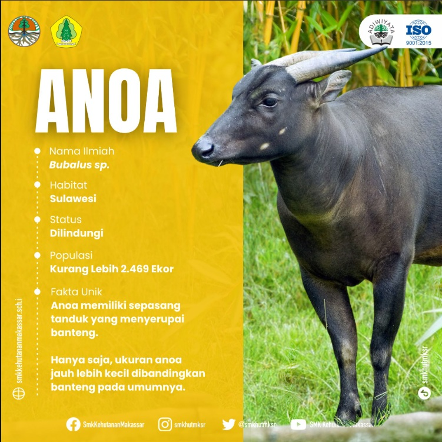

Foto Fauna Dilindungi






Menjaga Keberagaman Hayati untuk Masa Depan
Fauna adalah istilah yang digunakan untuk menyebut seluruh kehidupan hewan di suatu daerah atau lingkungan tertentu. Fauna dilindungi di Indonesia karena beberapa alasan, termasuk mencegah kepunahan, menjaga keseimbangan ekosistem, dan melestarikan keanekaragaman hayati.
Berikut penjelasan lebih lanjut:
Contoh Fauna yang Dilindungi di Indonesia:
Pelestarian fauna tidak hanya menjadi tanggung jawab pemerintah, tetapi juga melibatkan peran aktif masyarakat dalam menjaga kelestarian lingkungan dan menghindari perburuan liar.
| Nama | Jenis | Lokasi |
|---|---|---|
| Komodo | Mamalia | Pulau Komodo |
| Orang Utan | Primata | Sumatera |
| Gajah Sumatra | Mamalia | Sumatera |
| Burung Jalak Bali | Burung | Bali |
| Burung Cendrawasih | Burung | Papua |
| Anoa | Mamalia | Sulawesi |
Indonesia, sebagai salah satu negara megabiodiversitas dunia, memiliki beragam jenis fauna yang sangat unik dan berharga. Keanekaragaman hayati yang melimpah ini tidak hanya menjadi kekayaan alam yang luar biasa, tetapi juga bagian penting dari keseimbangan ekosistem di bumi. Namun, sayangnya, banyak dari spesies-spesies tersebut kini terancam punah akibat berbagai faktor, seperti perburuan liar, kerusakan habitat, dan perubahan iklim yang semakin meruncing. Oleh karena itu, untuk menjaga keberagaman hayati yang sangat berharga ini, pemerintah dan masyarakat Indonesia berusaha melindungi hewan-hewan yang terancam punah melalui berbagai program konservasi dan perlindungan satwa.
Di Indonesia, terdapat banyak spesies yang hanya bisa ditemukan di sini dan dikenal sebagai fauna endemik, seperti Komodo, Orangutan, dan Badak Sumatera. Satwa-satwa ini, meskipun memiliki keunikan yang luar biasa, kini berada di ambang kepunahan akibat berbagai ancaman.
Pelestarian fauna dilindungi di Indonesia tidak hanya menjadi tanggung jawab pemerintah, tetapi juga memerlukan partisipasi aktif dari masyarakat. Masyarakat perlu diberdayakan untuk lebih peduli terhadap pentingnya konservasi, dengan memahami bahwa keberadaan satwa-satwa ini bukan hanya penting untuk keseimbangan alam, tetapi juga untuk kelangsungan hidup manusia itu sendiri.
Melalui program edukasi, kampanye pelestarian, dan pengawasan ketat terhadap perdagangan satwa liar, kita dapat memberikan kontribusi positif untuk melestarikan satwa-satwa langka Indonesia. Tak hanya itu, dengan mendukung kebijakan yang pro-lingkungan dan mengurangi kegiatan yang merusak habitat, kita turut menjaga keberagaman hayati Indonesia untuk generasi mendatang.
Keanekaragaman hayati Indonesia adalah warisan yang tak ternilai harganya. Fauna yang dilindungi adalah bagian penting dari warisan ini, dan keberadaan mereka tidak hanya penting untuk alam, tetapi juga untuk manusia. Oleh karena itu, melindungi hewan-hewan ini adalah kewajiban kita bersama. Dengan langkah konservasi yang tepat, perlindungan habitat, serta partisipasi aktif dari masyarakat, kita bisa memastikan bahwa satwa-satwa langka ini tetap hidup dan berkembang biak di alam liar, sehingga mereka dapat terus memberikan manfaat bagi bumi dan generasi mendatang.